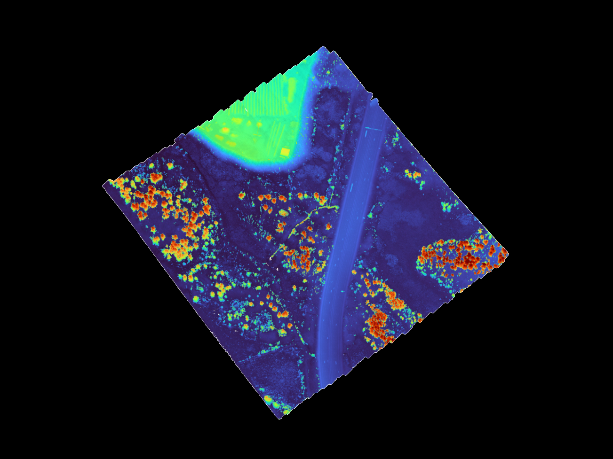
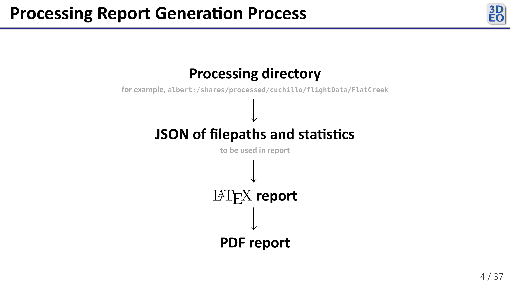
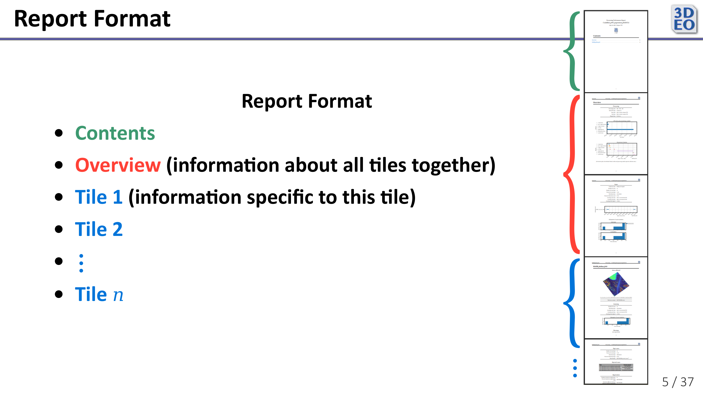
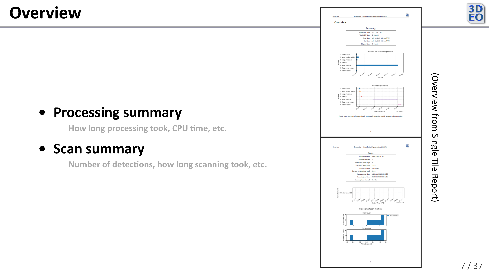
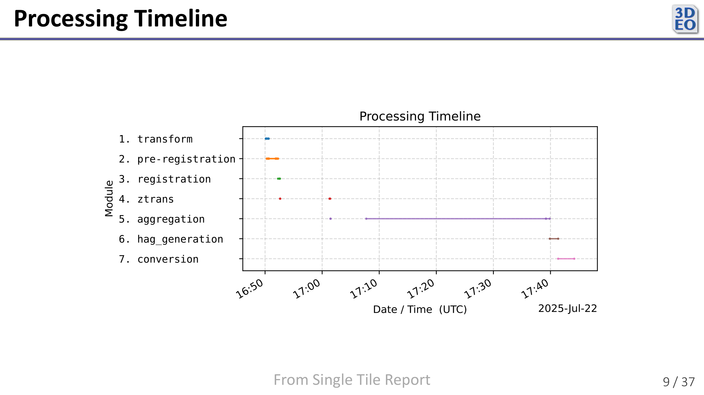
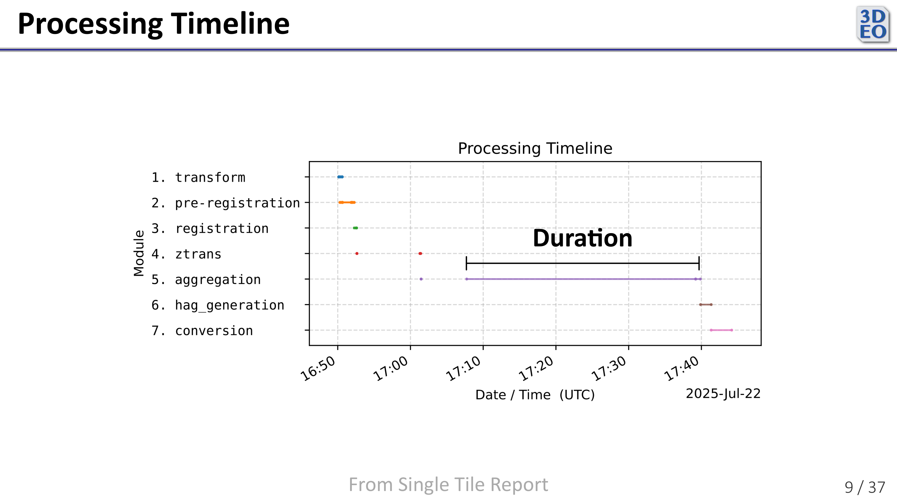
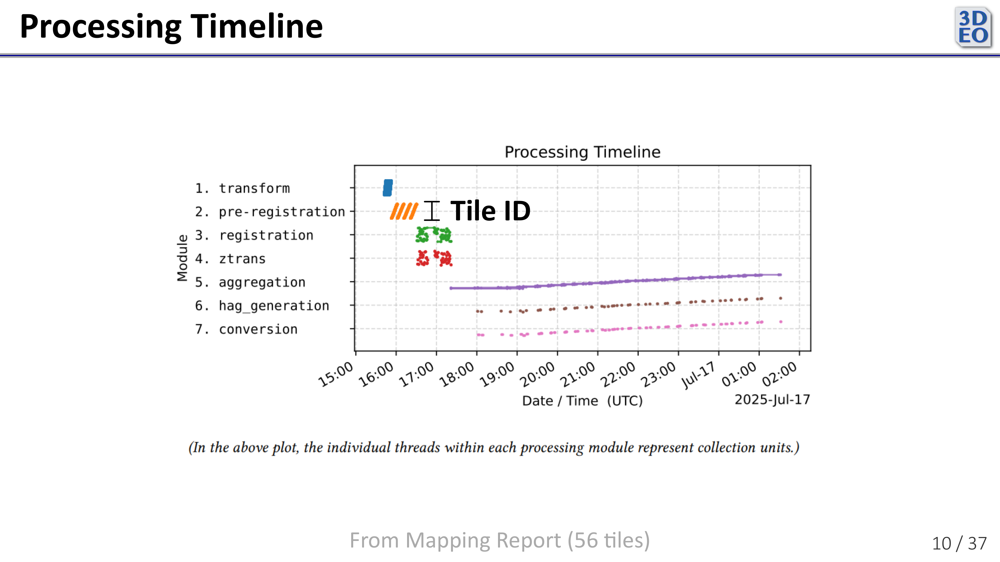
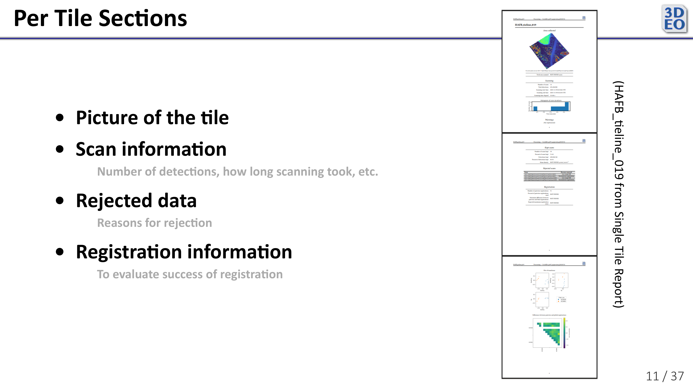

Internship with 3DEO—Processing Performance Report

See 3DEO internship overview and slides from my internship presentation on GitHub.
Also see example processing reports: Mapping Report, Single Tile Report. (These are from the time of my internship presentation. Current reports contain further improvements)
Processing Performance Report
Evaluating the success of a 3DEO lidar processing run is difficult. Diagnosing problems often requires digging through a SQL database with thousands of Slurm jobs, inspecting huge point clouds, parsing log files, and piecing together plots from different stages. It’s also important to know how long each stage took to identify bottlenecks. To streamline this process, 3DEO asked me to develop a tool that automatically generates human-readable processing performance reports.

I chose to generate the report in a few steps. First, my program collects data from processing outputs and the SQL database of Slurm jobs. Then it compiles that information into a large JSON, which it uses to populate fields in a number of LaTeX templates I wrote. Finally, it generates a PDF from the LaTeX.

3DEO’s processing pipeline is designed to handle both small and large amounts of data. As such, the report must be very flexible. Some reports are just a few pages, while others are longer than many college textbooks.
Here are a couple reports generated by the program as it was at the end of July:
- Mapping Report (long)
- Single Tile Report (short)
Since generating these reports, based on my recollection (as I no longer have access to my code), additions and changes to the report include:
- Removal of unimplemented fields (like those in the per-tile registration section)
- Reports on processing errors, both in the overview and the per-tile sections
- Improved formatting of tile images
- Report on versions of each processing module
- Per-tile processing timeline plot in each per-tile section

The report begins with an overview of all processing performed in the run. It contains a number of useful visualizations focused on processing time, among other things.

One such visualization is the Processing Timeline. It shows how long in real time (as opposed to CPU time) each stage of processing took.

Each thread shows how long one Slurm job took.

When processing multiple targets (tiles) simultaneously, the vertical axis (within each processing module row) indicates which target each Slurm job corresponds to. This helps visualize how many jobs were running concurrently at any given time.

The per-target (per-tile) sections of the report give detailed information for evaluating how successfully each target was processed. Since 3DEO currently processes targets individually, these sections help highlight issues or successes for specific tiles. One important subsection tracks data rejection, for which I modified the pipeline to record data rejections as they occurred during processing.
Developing the processing performance report program gave me a deeper understanding of lidar data processing and challenged me to present complex technical information clearly. The resulting reports make it easier to monitor processing performance, identify bottlenecks, and address issues quickly, providing great practical value to the team and giving me a meaningful opportunity to explore 3DEO’s advanced data processing tools.